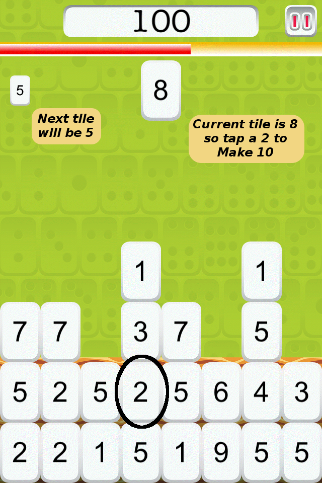

Make 10 as many times as you can before the wall reaches the top!
Break the wall by tapping the tile that will add to 10 with your current tile.

Earn points.

Every time you clear a level, the wall speed will increase or the total will change (or both) depending on your setting and level. Sums 5-10 will randomly choose a between among 5, 6, 7, 8, 9, or 10. Sums 5-20 will randomly choose up to 20 and Sums 5-100 will include 5-20, 60 and 100. If you can't find the missing addend, drop the current tile into an empty space.
Everyone can have fun while doing math!
- Younger kids can use Mahjong dots to count up the numbers and also adjust the total to a number as small as 5. Start at "Level 0" to enjoy a slower speed.

- For more of a challenge choose a sum of 60 to practice minutes to the hour or 100 to make change for a dollar.
About us
- , programmer and mom, designed and developed Make 10+.
- , illustrator and dad, created the artwork for Make 10+.
- For more information, visit the at http://bsiegal.github.com/
Make10Plus.
Rate it
If you like Make 10+, please rate it in the AppStore with 5 stars. Thanks!
Privacy Policy
- There are no ads, no connecting to social media, no collecting or sharing of location or personal information of any kind, no website links, and no extras to purchase.
Version 1.3.1